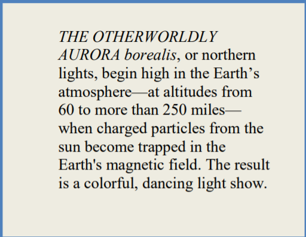
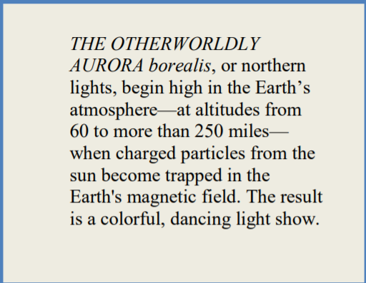
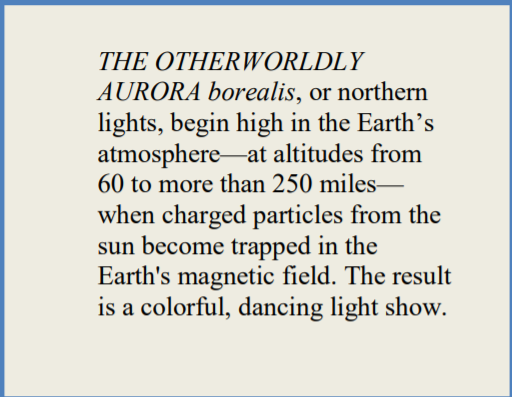
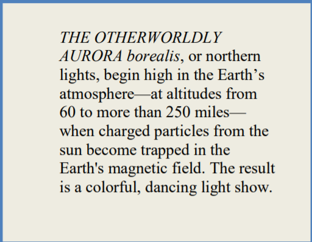

 

THE OTHERWORLDLY AURORA borealis, or northern lights, begin high in the Earth’s atmosphere—at altitudes
from 60 to more than 250 miles—when charged particles from the sun become trapped in the Earth's magnetic
field. The
result is a colorful, dancing light show.
The first time I filmed an aurora was from an icebreaker near Antarctica. Luckily, there are much more
accessible places if you’d like to take in these light shows yourself. For the best seats to this
celestial scene, consider anywhere with
a magnetic latitude above 55° and low light pollution.
Find your magnetic latitude on NOAA and here.
In the polar latitudes, auroras can appear on any dark night. Long winter nights are good but
not necessarily the best time. Near equinoxes in March and September, the Earth’s magnetic field
lets more solar particles interact with the
atmosphere, creating aurora seasons! I suggest autumnal
equinox in September, when there are pleasant temperatures in polar latitudes. Find the dark hours of
your location here, or by using a sky guide app.